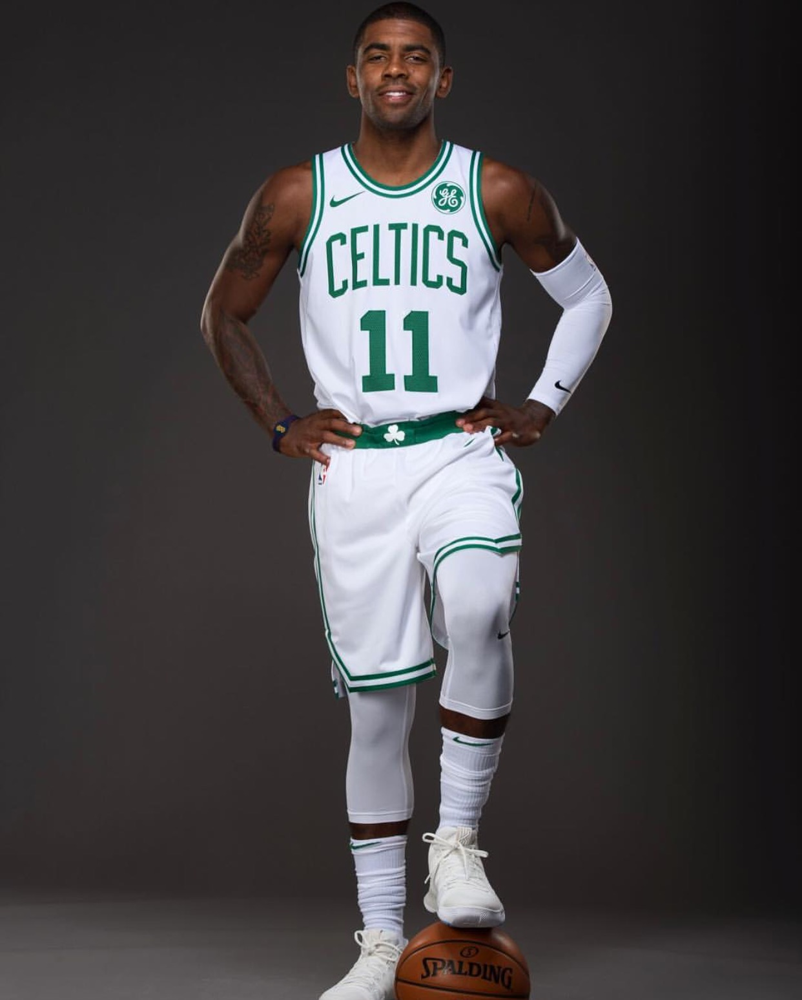
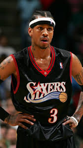
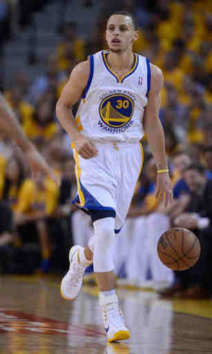
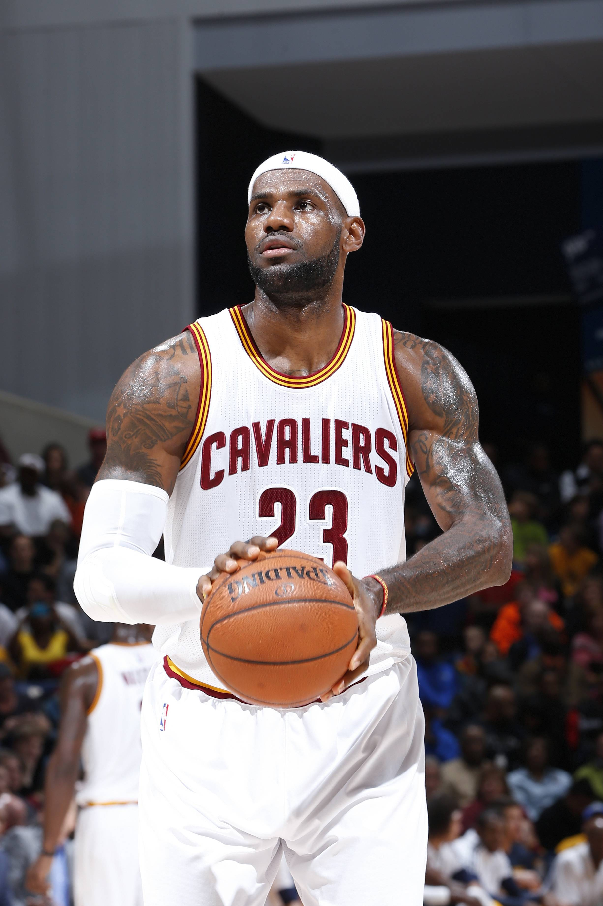
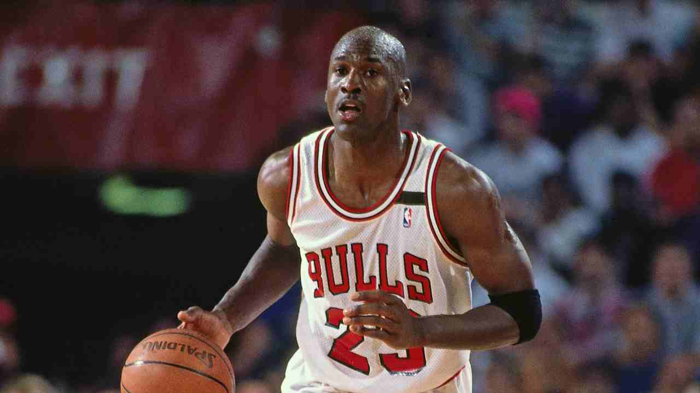
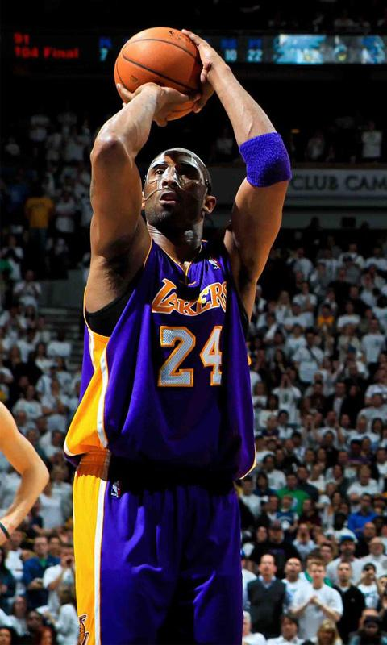

Full Name: Kyrie Andrew Irving
Team: Boston Celtics
Position: Point Guard
Jersey Number: 2 (Cavaliers), 11 (Celtics)
Height: 6-2 / 1.88 mts
Weight: 191 lbs / 86.6 kg
Born: March 23, 1992 in Melbourne, Australia
High-School: Saint Patrick in Elizabeth, New Jersey
College: Duke University
Drafted: by the Cleveland Cavaliers with No. 1 overall pick in round 1 of the 2011 NBA Draft
NBA Seasons: NBA Seasons 7 (3 Playoffs)
NBA Titles: NBA Championship 1 Championship
All-Star: 4 times - 1 MVP

Full Name: Allen Ezail Iverson
Position: Guard
Jersey Number: 3 (76ers, Nuggets), 1 (Pistons), 3 (Grizzlies)
Height: 6-0 / 1.83 mts
Weight: 165 lbs / 74.8 kg
Born: June 07, 1975 in Hampton, Virginia, USA
High-School: Bethel in Hampton, Virginia
College: Georgetown University
Drafted: by the Philadelphia 76ers with No. 1 overall pick in round 1 of the 1996 NBA Draft
NBA Seasons: NBA Seasons 14 (8 Playoffs)
NBA Titles: NBA Championship none
All-Star: 11 times (played 9 times) - 2 MVP
Full Name: James Edward Harden Jr.
Team: Houston Rockets
Position: Shooting Guard / Point Guard
Jersey Number: 13 (Thunder, Rockets)
Height: 6-5 / 1.96 mts
Weight: 220 lbs / 99.8 kg
Born: August 26, 1989 in Los Angeles, California, USA
High-School: Artesia in Lakewood, California
College: Arizona State University
Drafted: by the Oklahoma City Thunder with No. 3 overall pick in round 1 of the 2009 NBA Draft
NBA Seasons: NBA Seasons 9 (8 Playoffs)
NBA Titles: NBA Championship none
All-Star: 5 times

Full Name: Wardell Stephen Curry II
Team: Golden State Warriors
Position: Point Guard
Jersey Number: 30 (Warriors)
Height: 6-3 / 1.91 mts
Weight: 190 lbs / 86.2 kg
Born: March 14, 1988 in Akron, Ohio, USA
High-School: Charlotte Christian in Charlotte, North Carolina
College: Davidson College
Drafted: by the Golden State Warriors with No. 7 overall pick in round 1 of the 2009 NBA Draft
NBA Seasons: NBA Seasons 9 (5 Playoffs)
NBA Titles: NBA Championship 2 Championships
All-Star: 4 times

Full Name: LeBron Raymone James
Team: Cleveland Cavaliers
Position: Small Forward / Shooting Guard
Jersey Number: 23 (Cavaliers), 6 (Heat)
Height: 6-8 / 2.03 mts
Weight: 250 lbs / 113.4 kg
Nickname: King James
Born: December 30, 1984 in Akron, Ohio, USA
High-School: Saint Vincent-Saint Mary in Akron, Ohio
College: -
Drafted: by the Cleveland Cavaliers with No. 1 overall pick in round 1 of the 2003 NBA Draft
NBA Seasons: NBA Seasons 15 (12 Playoffs)
NBA Titles: NBA Championship 3 Championships
All-Star: 13 times - 2 MVP

Full Name: Michael Jeffrey Jordan
Position: Shooting Guard / Small Forward
Jersey Number: 23 (Bulls), 45 (Bulls), 23 (Wizards)
Height: 6-6 / 1.98 mts
Weight: 216 lbs / 98.0 kg
Nickname: Air Jordan, His Airness, MJ
Born: February 17, 1963 in Brooklyn, New York, USA
High-School: Emsley A. Laney in Wilmington, North Carolina
College: University of North Carolina
Drafted: by the Chicago Bulls with No. 3 overall pick in round 1 of the 1984 NBA Draft
NBA Seasons: NBA Seasons 15 (13 Playoffs)
NBA Titles: NBA Championship 6 Championships
All-Star: 14 times (played 13 times) - 3 MVP

Full Name: Kobe Bean Bryant
Position: Shooting Guard
Jersey Number: 8 (Lakers), 24 (Lakers)
Height: 6-6 / 1.98 mts
Weight: 205 lbs / 93.0 kg
Nickname: Black Mamba, Mr. 81, KB24
Born: August 23, 1978 in Philadelphia, Pennsylvania, USA
High-School: Lower Merion in Ardmore, Pennsylvania
College: -
Drafted: by the Charlotte Hornets with No. 13 overall pick in round 1 of the 1996 NBA Draft
NBA Seasons: NBA Seasons 20 (15 Playoffs)
NBA Titles: NBA Championship 5 Championships
All-Star: 18 times (played 15 times) - 4 MVP
Previous
Next